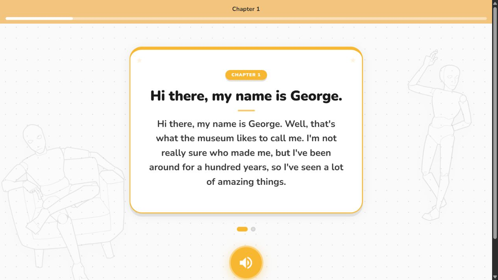
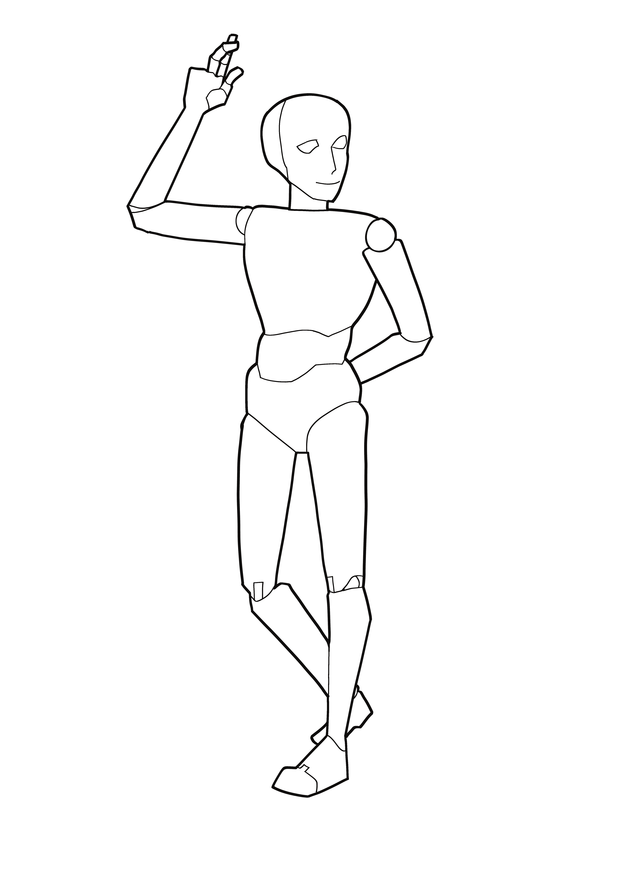
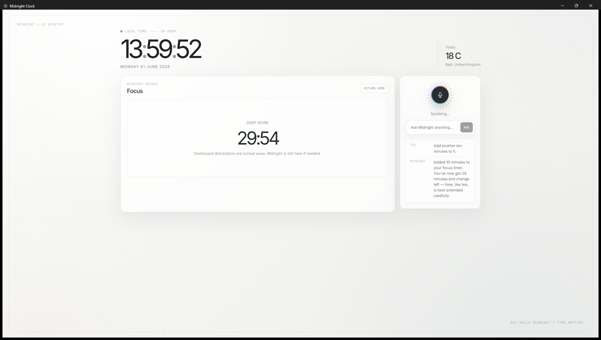
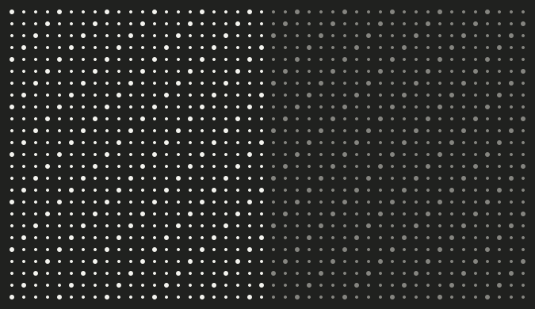
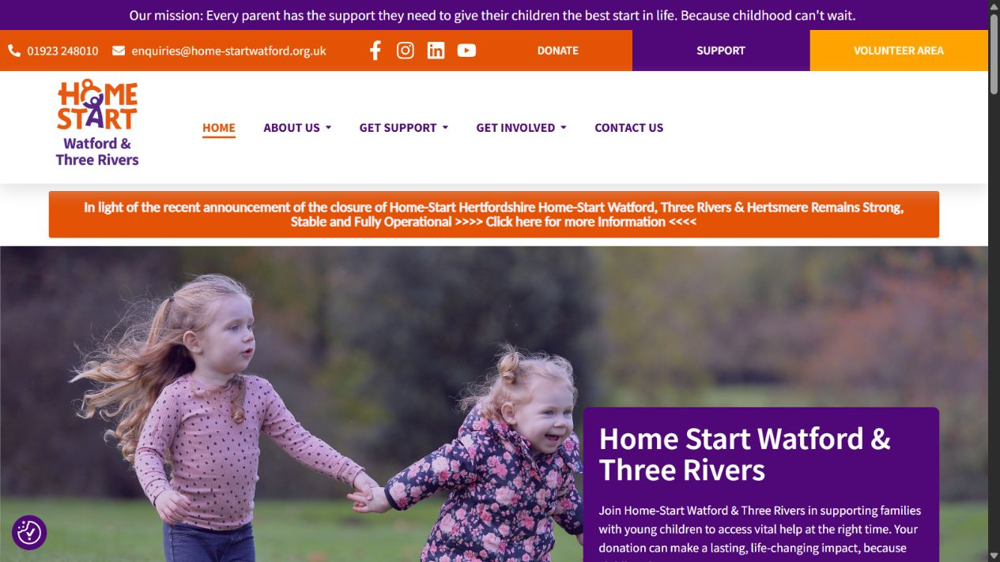

George
Interaction design · Prototype
Creative computing.
Interaction design. Ideas you can try.


Interaction design · Prototype

Interface & software · In development
Creative technology · Concept

Holocaust remembrance · Creative coding

UX & AI design · Submitted app work

Web · Ongoing volunteer work
Six projects. Different ways of thinking.
02 / About
I work between design and code, using prototypes to turn an idea into something people can try.
I’m studying Creative Computing at Bath Spa University, graduating in 2027. My projects include submitted freelance UX and AI design work for Virgin Money’s app, ongoing website work for Home-Start, museum interaction design and creative coding.
Available for graduate UX, UI and creative technology roles from September 2027.
Two CVs, focused on different parts of my practice.
Get in touch03 / Playground
Forty experiments in interaction, motion and sound. Try them in your browser, then explore the code.
Get in touch